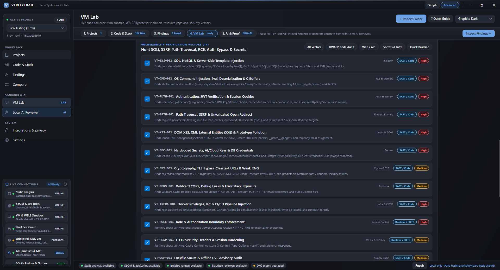

Projects
Safe SHA-256 import of folders, Git repos, guarded ZIPs, and Windows binaries — excluding .env, keys, and secrets.
VerityTrail snapshots your codebase or binaries into immutable SHA-256 stores offline, inventories dependencies and CWE findings, runs runtime checks in isolated sandboxes, and proves before-and-after fixes without leaking source or secrets.

VerityTrail separates static code inspection from isolated execution and refuses to conflate unverified assumptions with proven remediation.
Every discovered language, lockfile dependency, and CycloneDX 1.5 component records its exact source file and Confirmed vs. Inferred confidence. Static CWE findings carry stable SHA-256 FindingFingerprint IDs while excluding secrets at import.
Runtime checks distinguish WSL2 Linux Sandbox, hardware VM boundaries, LocalDevHarness (non-VM), and StaticOnly mode explicitly. Across revisions, RetestEvaluator marks a finding Verified fixed only after a comparable passing control retest.
From guarded snapshot ingestion to local AI review and headless CI gates, every layer enforces explicit boundaries and auditable evidence.
.env, keys, and credential stores.
semgrep, trivy, gitleaks, syft, grype, osv-scanner, nuclei, openssl, wsl, and ecosystem runtimes alongside CycloneDX 1.5 dependency graphs.
veritytrail-cli for CI/CD
Runs automated audit, compare, guard-bridge, and telemetry test gates with threshold exits and redacted Markdown, HTML, JSON, and SBOM exports.
Illustrative overview — actual snapshot digests, boundary modes, and retest verdicts are reported individually in VerityTrail.
Every stage writes immutable evidence to local SQLite WAL and SHA-256 stores so revision comparisons distinguish truly fixed findings from untested or incomparable runs.
Capture folders, Git commits, guarded ZIPs, or binaries into SHA-256 blobs while stripping .env, keys, and secrets.
Profile 25+ languages, generate CycloneDX 1.5 SBOMs, and surface CWE findings with confirmed source provenance.
Run runtime security vectors inside explicit WSL2, Hyper-V, VirtualBox, or clearly labeled local harness boundaries.
Diff two revisions with RetestEvaluator to confirm Verified fixed closures and export redacted evidence bundles.
Project imports, SQLite WAL state, SHA-256 blobs, CWE static checks, CycloneDX 1.5 SBOM generation, local sandbox runs, retest diffs, and redacted exports all run strictly offline. Optional OriginTrail DKG v10 Working Memory and Umanitek Agent Blackbox Guard integrations are disabled or local-only unless you turn them on.
Core assurance works standalone offline. When enabled, VerityTrail pairs a read-only Blackbox reviewer guard with private local OriginTrail DKG v10 Working Memory receipts.

Local Working Memory Context Graph
(127.0.0.1:19210 · finalize: false).


Read-only tool allowlist, 3/3 Canary Self-Test
and tamper-evident JSONL audit log.
Snapshot. Analyze.
Verify & prove fix.
Comparable retests prove fixes across revisions
using deterministic SHA-256 fingerprints.
AssessmentRun & EvidenceDigest quads
queued via SQLite Outbox after leakage checks.
AssertNoLeakage blocks raw code, file paths, and secrets before any optional DKG Working Memory write.Every optional DKG v10 write passes through DkgRdfBuilder and SQLite OutboxRepository so offline runs queue safely and replay when the local node returns. A 6-step Self-Heal engine repairs SQLite WAL state, prunes temp blobs, and re-tests the Blackbox canary on demand.
Cloud AI APIs (10 providers) are strictly opt-in; local servers and CLI harnesses remain read-only guarded.
VerityTrail targets Windows 10/11 x64 on .NET 10 + Avalonia 12, reports detected hypervisors and WSL2 sandboxes transparently, and ships a headless CLI for CI pipelines.
All 8 primary desktop screens live with Trail Dark/Light themes, 6-step Diagnostics & Self-Heal, and per-user SHA-256 install packaging.
Detects WSL2 Linux Sandbox, Windows Hyper-V, and Oracle VirtualBox boundaries with host preflight checks and resource caps.
veritytrail-cli explicitly distinguishes WSL2/VM vs LocalDevHarness (non-VM) vs StaticOnly — local harnesses never claim VM isolation.
VerityTrail is an independent security assurance project within OpenDKG — bringing local-first code auditing, verifiable fix closures, and optional OriginTrail DKG v10 Working Memory provenance to engineering teams.
Meet OpenDKG OPEN-SOURCE ORGANIZATION
OPEN-SOURCE ORGANIZATION
Current status: Release Candidate 0.1.0 for Windows x64 (.NET 10 + Avalonia 12). Source and builds are not public yet. Active engineering toward v1.0.0 covers live Hyper-V/VirtualBox guest channels, SARIF scanner ingestion, and Authenticode release signing.